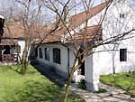

| The International Ceramics
Studio
Kecskemét, Hungary
About the International Ceramics Studio
The International Ceramics Studio
(ICS) is a ceramic art center located in the town of Kecskemét,
eighty kilometers south of the Hungarian capital, Budapest. The
center was created over 25 years ago on the initiative of Hungarian
artists who had felt culturally and ideologically isolated by the
political system of that time. It was the wish for freedom and the
desire to work alongside international artists that led to the founding
of the center Since its establishment it has welcomed over 350 artists
from all corners of the world, and boasts an impressive collection
of over 3000 works
of contemporary ceramics in its recently opened museum.
The mission of the studio is to promote the formal, aesthetic
and technical development of ceramics and to help foster creative
skills. The studio is open to all challenges of ceramic research,
design and experiment. With this in mind the ICS offers modern facilities
and kilns, ample studio space and technical support.
We provide artists with the space to create new works, experiment
with innovative ideas, explore new directions in their work and
research new and different ways of making. Artists are encouraged
to explore all our facilities to open up new possibilities and directions
for the contemporary ceramist. Resident artists are able to exchange
ideas and experiences through presentations and informal discussion
Organized work programs
Alongside the artist-in-residence
program the ICS organizes a series of thematic
workshops, courses and events, led by internationally respected
masters. Artists in residence may like to consider these programs
when scheduling their residency time. It may be that some programs
will be interesting or relevant to your work. Participation in some
Organized workshop programs may require an additional participation
fee. Please see the program pages on our website for information.
Artist-in-Residence Program
The artist-in-residence
program is open to all artists who wish to work independently
on their own pro|jects Artists may use the residency to accomplish
a specific pro|ject or to work in a creative and supportive atmosphere
alongside other international ceramic artists The luxury of time
and the studio environment allows for intense periods of creativity
free from the distractions of everyday pressures A valuable time
where art and life become one - in perfect balance.
The ICS artist-in-residence program allows artists to work in
the context of a different country and culture We have created,
here in Kecskemét, a center of international cultural exchange,
allowing artists to work alongside others from a variety of rich
and culturally diverse backgrounds as well as local arts professionals
and students.
On average the are up to ten artists in residence at the ICS at
any one time There are plenty of opportunities to interact with
the other artists but enough space to be quiet and reflective.
Further information and application forms are available from the
Residency and International Contact at the studio Email mfo@icshu
org.
Accommodation and studio facilities
Rooms
are simply furnished with beds, desk, chairs, wardrobe and cupboard
and supplied with clean bed-linen, pillows and towels.
Accommodation may be in single or twin bedded rooms with
shared facilities or we have a limited number of single en-suite
rooms with their own shower and WC at a small supplement cost.
Artists have full of modern, fully equipped kitchens with large,
shared refrigerators, cookers and microwave ovens. All cups, plates,
cooking pots, saucepans and cutlery is provided. There are spacious
lounges and dining rooms.
Studios
are provided for single, double or larger shared workshop spaces.
There is water in most studios, tables and chairs as you need and
central heating. Artists have 24 hour access to the workshops. In
addition to the clay studios we have a fully equipped plaster workshop
for model and mould making.
We have a full silkscreen printing facility for direct and indirect
print including vacuum print bed, photo exposure screen and pressure
washer. Artists have access to computer design on both MAC and
PC
running Photoshop, Illustrator, Quark etc., flatbed and slide scanners
and black and white laser or A3 color inkjet printers.
There is a fully equipped lecture and conference room with large
screen TV, video and DVD and slide projectors. All resident artists
are requested to give slide shows or lectures about their work to
their fellow artists.
Our extensive library carries ceramic books and magazines as well
as other art publications. There is computer broadband internet
access and all residents can make use of this facility for browsing
or email at a small cost.
Materials and equipment
There are slabrollers, electric and kick wheels, extruders, pugmills,
ballmills etc. provided for artist’s use and we have 9 electric
kilns of varying sizes, two gas kilns (firing to 1 400c for porcelain),
6 wood-fired kilns, two for salt or soda and raku kilns.
We stock a variety of clays including fine and grogged stonewares,
white and colored 'Creaton' chamotte or smooth textured clays and
two kinds of porcelain available as plastic clay or slip, one of
extremely high quality, fine and translucent.
The Town of Kecskemét
The beautiful market town of Kecskemét
is the county town of Bacs Kiskun and is situated in the center
of the Great Hungarian Plain. Long known for its cultural life Kecskemét
boasts many art collections and is the home of the Naive Art Museum,
the Museum of Folk Art, the Toy Museum, Museum of Photography and
the ICS Collection.
A quiet and relaxed city which has numerous cafes, bars and excellent
restaurants, the town center is only a short five minute walk from
the peaceful enclave of the studio.
The International Ceramics Studio is a non-profit making organization
supported by Bacs Kiskun County (who founded the studio) and Kecskemét
Town Council.
"It has been a great experience for us to be at the ICS
and it even surpassed my expectation. You have created some fantastic
frames for working with clay and the equipment is second to none.
The place is, in its whole architecture, a visually inspiring place
but most of all - and the really important - is the fantastic spirit
of the place."
Heidi and Aage
Birck (Denmark)
International Ceramics Studio
H6000 Kecskemét, Kdpolna u, IT, Hungary
teb -f 36 76 486867, fax: + 36 76 482223
WWW: www.icshu org
email: icshu@axelero.hu
The Hungarian Connection
Artist of the Week - Maria
Geszler-Garzuly
DVD Review: Eva Zeisel - Throwing Curves
More Articles
|